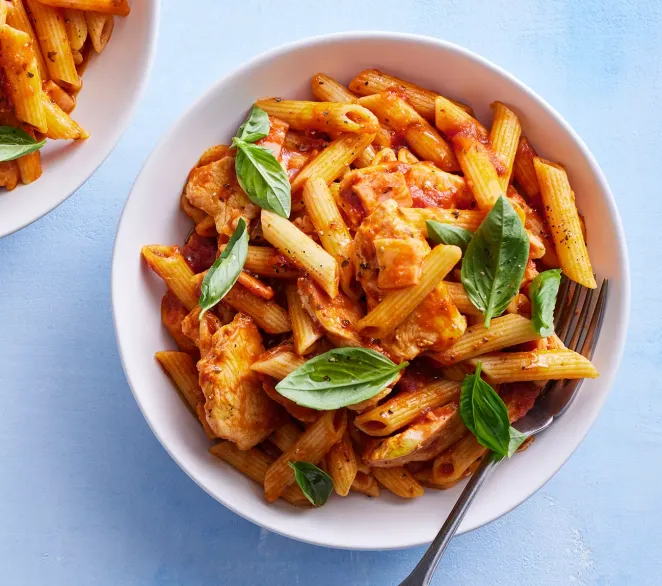

Delicious Pasta

Ingredients
200g pasta
2 cups tomato sauce
1/2 cup grated cheese
1 tablespoon olive iol
salt and pepper to taste
Prepartion Steps
Boil the pasta until al dente.
Heat the tomato sauce in a pan and add the cooked pasta.
Stir in olive oil, salt, and pepper.
Sprinkle grated cheese on top.
Serve hot and enjoy!
Cooking time:
20 minutes
Serving size:
2
Delicious Pasta
Ingredients
200g pasta
2 cups tomato sauce
1/2 cup grated cheese
1 tablespoon olive iol
salt and pepper to taste
Prepartion Steps
Boil the pasta until al dente.
Heat the tomato sauce in a pan and add the cooked pasta.
Stir in olive oil, salt, and pepper.
Sprinkle grated cheese on top.
Serve hot and enjoy!
cokking ime 20 minutes
Serving Size:2